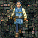

| Note that all races can increase thier stats to 18 (19 for intelligence, wisdom, willpower) in nork using stat pots found randomly, excluding charisma and luck. So try to get charisma as high as possible when rolling a new character. |
|||
| Picture | Race | Description | Race Specific Attribute Ranges |
 |
City dweller | An all-purpose character, human in appearance, they enjoy socializing and the hustle and bustle of city life. City Dwellers are apt to be strong and to have very good luck, which they need given their love for gambling |
Strength: 9 to 18 Intelligence: 8 to 18 Wisdom: 8 to 18 Willpower: 8 to 18 Constitution: 3 to 18 Agility: 3 to 18 Charisma: 4 to 18 Luck: 13 to 18 Gold coins: 24 to 82 Health: 30 to 55 |
  |
Woodlands Dweller | The Woodlands Dweller is a racial blend of City Dweller and Forest Dweller, being neither one nor the other, but something both in between and unique. They tend to have good agility, intelligence and willpower. Many of the great Mentalist of Drakkar are Woodlands Dwellers. |
Strength: 3 to 18 Intelligence: 8 to 18 Wisdom: 3 to 18 Willpower: 10 to 18 Constitution: 3 to 18 Agility: 8 to 18 Charisma: 6 to 16 Luck: 7 to 17 Gold coins: 25 to 84 Health: 30 to 54 |
  |
Forest Dweller | Tall, slim, humanoids with pointed ears. They are very elegant and delicate in appearance, and speak in a melodious tongue. They tend to be agile and extremely charismatic, with high intelligence. Some say that when their voices lift in song, the trees around them are apt to tremble at their beauty. |
Strength: 4 to 18 Intelligence: 3 to 18 Wisdom: 3 to 18 Willpower: 3 to 18 Constitution: 8 to 16 Agility: 13 to 18 Charisma: 6 to 16 Luck: 6 to 16 Gold coins: 28 to 86 Health: 30 to 53 |
| Outcast | Are shunned by most other races. Long ago a mark was placed upon every Outcast's face so that all might know to avoid them, but everyone has mellowed with the passage of time. The legends imply that the reason for this marking goes back to the days when the Drakkar's power was great, and mortal traitors bent to her will. Outcasts' strength and weaknesses have long been hidden due to their secretive and solitary existence, but they are rumored to have great strength but little luck. |
Strength: 14 to 19 Intelligence: 3 to 18 Wisdom: 4 to 18 Willpower: 6 to 14 Constitution: 9 to 19 Agility: 3 to 18 Charisma: 2 to 12 Luck: 1 to 6 Gold coins: 26 to 83 Health: 30 to 58 +2 combat bonus. *Not verified* |
|
 |
Mountain Dweller | Short, stocky, hardy individuals with leather skin. They have good constitutions and are very strong. They tend to have terrible luck but start out with more gold pieces than any other race. And their skills as fighters keep their sacks full |
Strength: 8 to 18 Intelligence: 3 to 18 Wisdom: 3 to 18 Willpower: 2 to 16 Constitution: 11 to 18 Agility: 3 to 18 Charisma: 4 to 14 Luck: 3 to 12 Gold coins: 23 to 85 Health: 30 to 56 |
  |
Underground Dweller | Underground dwellers are extremely short and somewhat childlike in appearance. But don't underestimate them, because they are great fun once you get a few ales down them. In addition, they are extremely agile and have strong constitutions. As with the Outcasts, Lady Luck rarely smiles on the Underground Dweller. |
Strength: 8 to 17 Intelligence: 8 to 16 Wisdom: 8 to 18 Willpower: 6 to 17 Constitution: 8 to 18 Agility: 8 to 18 Charisma: 3 to 15 Luck: 3 to 12 Gold coins: 25 to 86 Health: 30 to 57 |